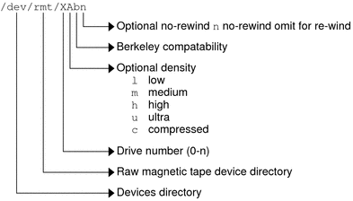

|
|||||||||||||||||||||||||||
|
1. Managing Removable Media (Overview) 2. Managing Removable Media (Tasks) 3. Accessing Removable Media (Tasks) 4. Writing CDs and DVDs (Tasks) 5. Managing Devices (Overview/Tasks) 6. Dynamically Configuring Devices (Tasks) 7. Using USB Devices (Overview) 9. Using InfiniBand Devices (Overview/Tasks) 11. Administering Disks (Tasks) 12. SPARC: Adding a Disk (Tasks) 13. x86: Adding a Disk (Tasks) 14. Configuring Solaris iSCSI Targets and Initiators (Tasks) 15. Configuring and Managing the Solaris Internet Storage Name Service (iSNS) 16. The format Utility (Reference) 17. Managing File Systems (Overview) 18. Creating UFS, TMPFS, and LOFS File Systems (Tasks) 19. Mounting and Unmounting File Systems (Tasks) 20. Using The CacheFS File System (Tasks) 21. Configuring Additional Swap Space (Tasks) 22. Checking UFS File System Consistency (Tasks) 23. UFS File System (Reference) 24. Backing Up and Restoring File Systems (Overview) 25. Backing Up Files and File Systems (Tasks) 26. Using UFS Snapshots (Tasks) 27. Restoring Files and File Systems (Tasks) 28. UFS Backup and Restore Commands (Reference) 29. Copying UFS Files and File Systems (Tasks) 30. Managing Tape Drives (Tasks) How to Display Tape Drive Status Handling Magnetic Tape Cartridges |
Backup Device NamesYou specify a tape or diskette to use for backup by supplying a logical device name. This name points to the subdirectory that contains the “raw” device file and includes the logical unit number of the drive. Tape drive naming conventions use a logical, not a physical, device name. The following table shows this naming convention. Table 30-2 Basic Device Names for Backup Devices
In general, you specify a tape device as shown in the following figure. Figure 30-1 Tape Drive Device NamesIf you don't specify the density, a tape drive typically writes at its “preferred” density. The preferred density usually means the highest density the tape drive supports. Most SCSI drives can automatically detect the density or format on the tape and read it accordingly. To determine the different densities that are supported for a drive, look at the /dev/rmt subdirectory. This subdirectory includes the set of tape device files that support different output densities for each tape. Also, a SCSI controller can have a maximum of seven SCSI tape drives. Specifying the Rewind Option for a Tape DriveNormally, you specify a tape drive by its logical unit number, which can run from 0 to n. The following table describes how to specify tape device names with a rewind or a no-rewind option. Table 30-3 Specifying Rewind or No-Rewind for a Tape Drive
Specifying Different Densities for a Tape DriveBy default, the drive writes at its “preferred” density, which is usually the highest density the tape drive supports. If you do not specify a tape device, the command writes to drive number 0 at the default density the device supports. To transport a tape to a system whose tape drive supports only a certain density, specify a device name that writes at the desired density. The following table describes how to specify different densities for a tape drive. Table 30-4 Specifying Different Densities for a Tape Drive
The additional density values are shown in Backup Device Names. |
||||||||||||||||||||||||||
|